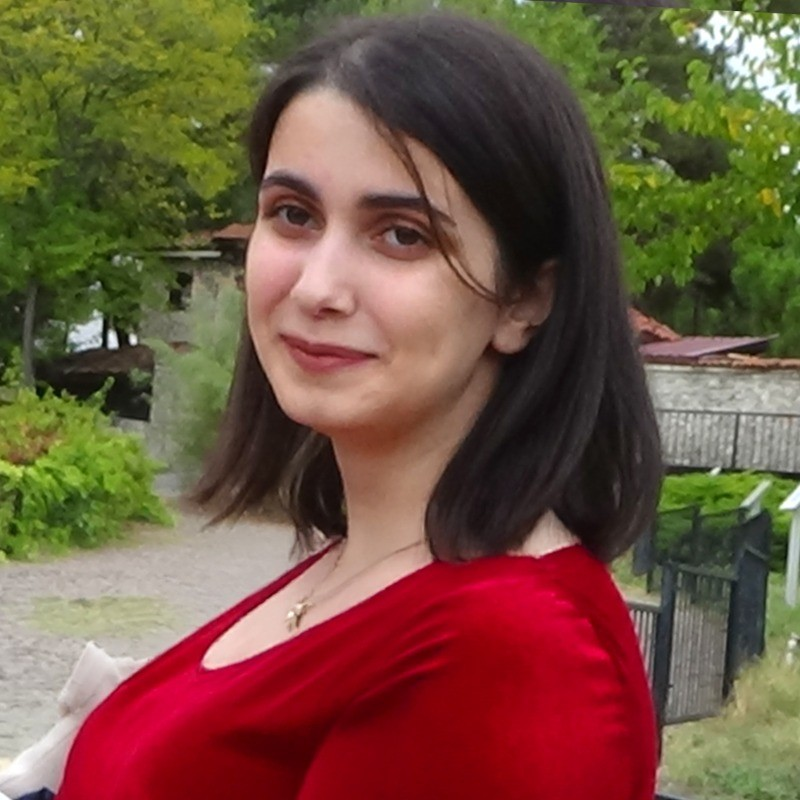

Hi! I'm Ayse,
a passionate UX/UI design student at Drexel University striving to create user-friendly and inclusive digital experiences. Explore my journey and the projects that reflect my dedication to thoughtful design.

What I offer
UX/UI Design: Expertise in wireframing, prototyping, and creating intuitive interfaces.
Front-End Development: Skilled in HTML, CSS, and JavaScript for building responsive designs.
Research & Analysis: Strong foundation in user research, data-driven design decisions, and iterative testing.
Creative Vision: Passion for illustration, photography, and storytelling that enhances my design approach.
Contact Form
You can also fill out this form below, and I’ll get back to you as soon as possible!